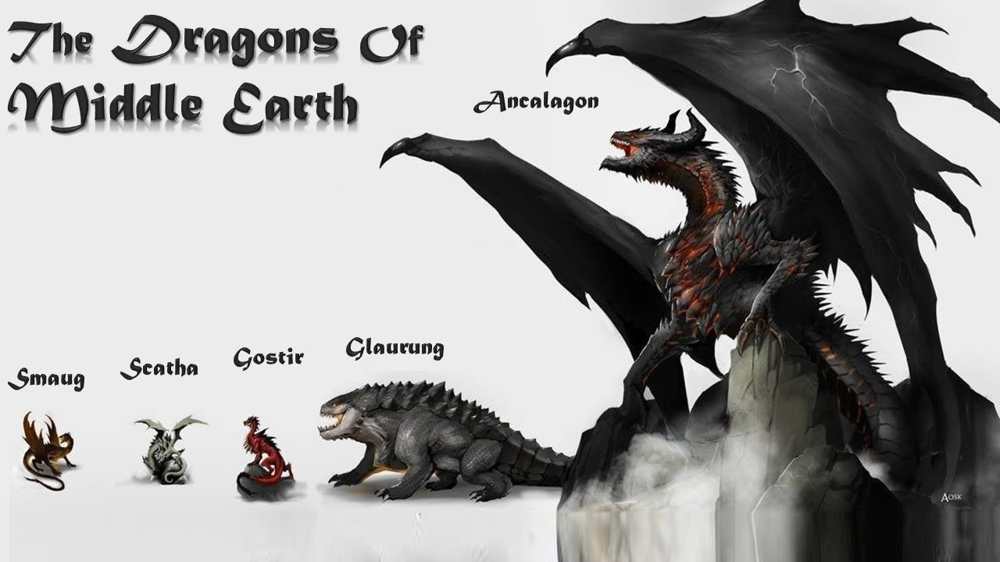
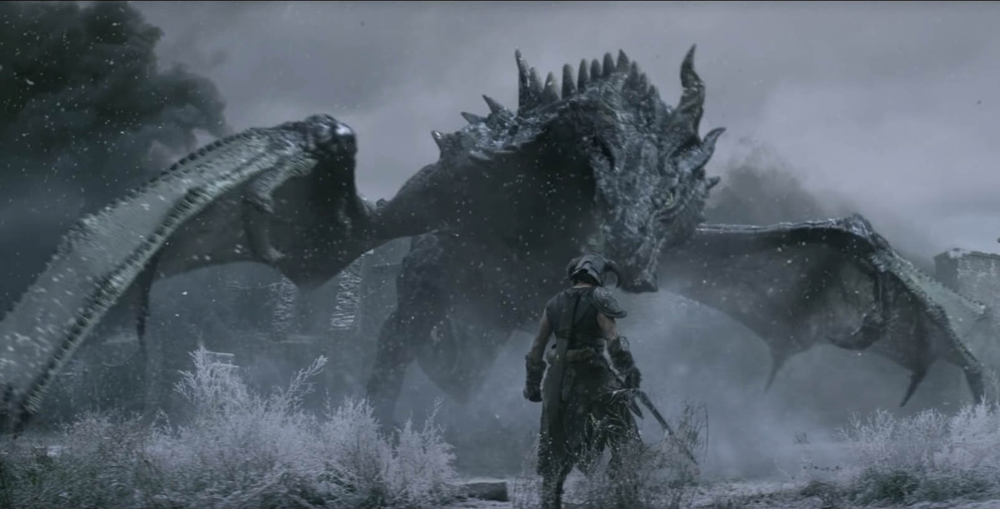

Dragons are mythological creatures, who are an combination from birds and reptiles. Their exist in many different mythologies and videogames. Their can be found in many different shapes. Some are really small like mu shu from Disneys movie Mulan and some are really big like Ancalagon from middle earth, who destroyed a hole mountain as he fell in a battle. How seen in this examples, in some mythologys the dragons are more snake formed and in other their look more like lizards with wings. The dragons are often known for having thick scales, who cant be destroyed with simple weapons like swords or normal bows and arrows.
dnd dragons

D&D dragons are the dragons where most games based their dragons on. In D&D dragons can speak and have different personality, most of the time based on their personality also their element (fire, lightning poison) is based on their color. Red dragons have a chaotic evil personality and are mostly used as villains in D&D and have a fire breath. Blue dragons have a lawful evil personality and a lightning breath. Green Dragons are lawful evil and has a poisonous breath. White dragons are also chaotic evil like the red and have a cold breath. Then there are black dragons who are the chaotic Evilest under the dragons and has an acid breath. And then there are the good dragons with the gold dragons, bronze dragons, copper dragons, brass dragons and silver dragons. In D&D there are no neutral dragon, their either evil or good.
middle earth dragons
 Middle earth dragons were created by Morgoth an evil being from the Valar who was created by Eru I lúvatar the creator of the valar. The dragons of middle earth wer ancient, intelligent an powerful creatures. Their were created as war beasts. Their lived through the First, Second and Third ages of Middle-earth and may have lived even longer. Their had an overwhelming lust for treasure, especially gold, and were known for sleeping on hoards of all they had stolen. Their have a greater priority on possessing a hole lot of gold then on getting food and their can live through decades without eating or drinking. Their were also great at smelling things and never forgot how something smells. Their also had strong scales were no normal arrow or normal sword could get through but the scales were also very light. The Dragon fire were hot enough to melt the rings of power.
Skyrim dragons
Skyrim is completely based around Dragons. At the beginning of the game there is a dragon which wants to kill you. Their called Dovah in their own language and are quite intelligent. Their able to speak, read and learn new languages. Their own language can be used for powerful magic known as Thu’um or dragon shouts. Their appear in different form. Like the frost dragon who has frost breath, the normal dragon witch has fire attack, the lightning dragon witch has lightning breath, then there are also stronger versions of the dragons for example blood dragons or legendary dragons. The strongest dragon in the game is probably Alduin the World Eater, who is the dragon you are hunting through the main story line. Dragons are so special in Skyrim because (spoiler alert) you are an dragonborn (dovahkin) and can absorb the souls of dragons to use their spells.